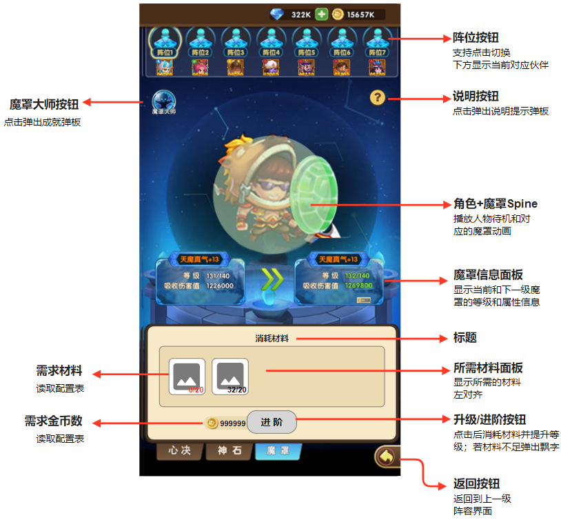
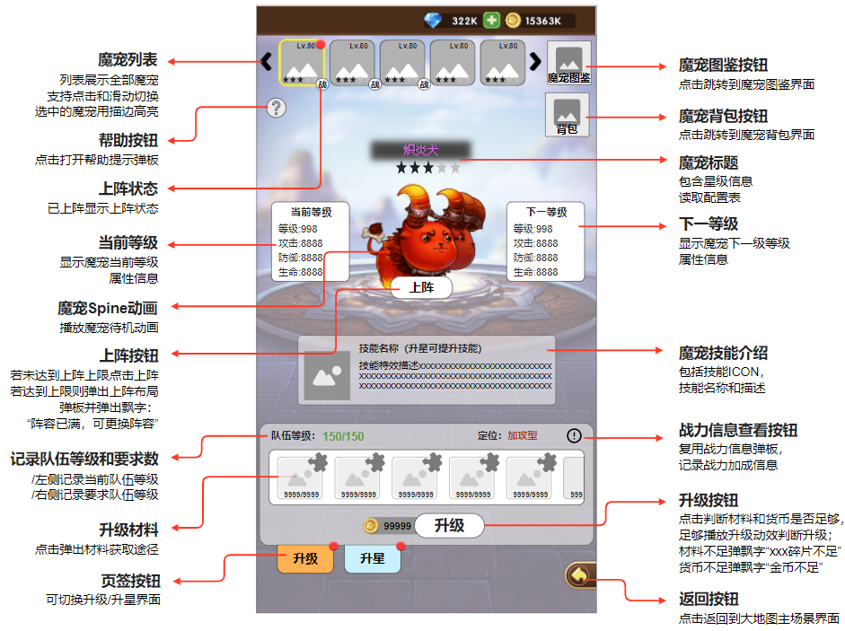
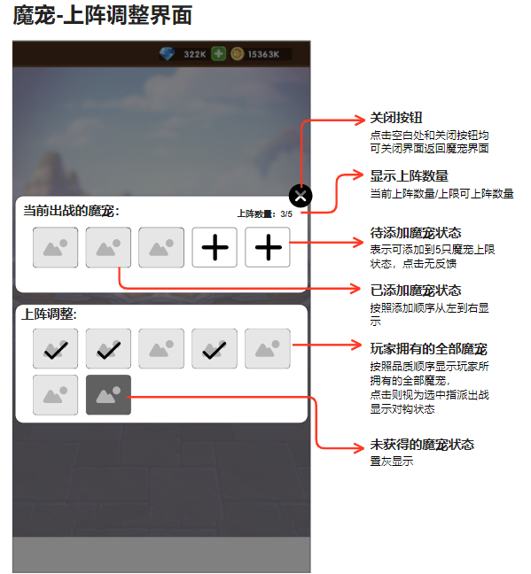
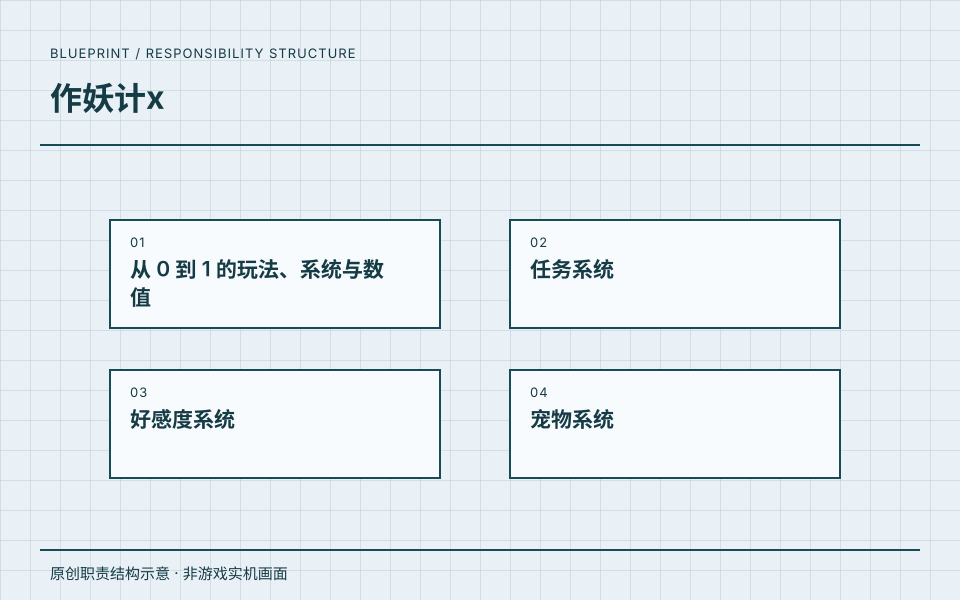

魔罩：成长条件与交互反馈
新增生存向培养线，并把提升条件转为可理解的界面反馈。

设计工作
新增生存向培养线，并把提升条件转为可理解的界面反馈。
文档产出
署名文档创建及材料途径修订记录支持本人方案产出；材料产出仍含待定项，不宣称最终投放或商业结果。
关键取舍
- 区分未解锁、可提升、材料不足和满级等状态。
- 对照当前与下级属性，材料入口连接获取途径。
- 红点从功能向阵容入口传递，并补齐引导、资源和埋点需求。
04 / 系统设计蓝图 · PROJECT 02
参与小游戏项目，撰写并修订魔罩、魔宠系统方案，连接成长规则、战斗表现、UI/UE、配置需求与引导红点。
任职角色沿用履历记录；具体贡献按项目资料区分，共同职责不逐项归为单个项目的独立成果。
MY WORK / DESIGN VALUE
两份文档正文署名“文档撰写人：吴天昊”；团队美术为历史界面参考，不归为本人绘制。资料不单独证明最终上线或商业效果。
职责依据本人履历与确认；原图补充设计证据，经营结果另行说明来源与口径。
GROWTH / BATTLE / UI·UE
从培养规则到战斗与界面交付，展示魔罩、魔宠的具体策划工作。
主策划任期：2021.05—2022.07。两份文档正文均署名“文档撰写人：吴天昊”，并有本人创建和修订记录。项目按用户确认名称展示；资料目录保留“作妖记x”等历史命名，不据此推定正式版本更名。文档证明方案产出，不单独证明最终上线或商业效果；团队美术为原文历史界面参考，不归为个人绘制。
新增生存向培养线，并把提升条件转为可理解的界面反馈。

新增生存向培养线，并把提升条件转为可理解的界面反馈。
署名文档创建及材料途径修订记录支持本人方案产出；材料产出仍含待定项，不宣称最终投放或商业结果。
把收集、培养和战斗作用连接为长期目标。

把收集、培养和战斗作用连接为长期目标。
正文署名及第 2 版修订记录支持品质、战力与培养材料设计工作；不公开战力公式、技能参数或商业配置。
让培养成果进入阵容选择和战斗释放次序。

让培养成果进入阵容选择和战斗释放次序。
交付上阵调整规则、界面标注与战斗顺序说明；团队美术为历史参考，不归为本人绘制。
资料来源：《魔罩系统文档》《魔宠系统文档（第2版）》。仅展示审核后的界面图与规则摘要，不公开完整原件、配置及内部数据。

参与小游戏项目，撰写并修订魔罩、魔宠系统方案，连接成长规则、战斗表现、UI/UE、配置需求与引导红点。
《作妖计》列于这段任职经历中。
任职、角色与职责依据本人履历及确认。图示是本站原创的职责结构表达。